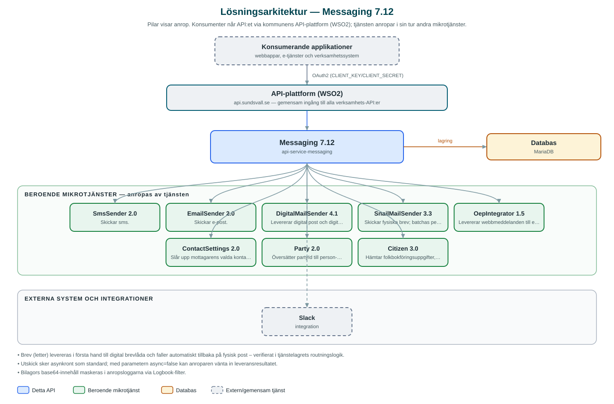

Messaging
Gemensamt API för att skicka meddelanden till invånare, företag och medarbetare – via sms, e-post, digital brevlåda, webbmeddelanden och fysiska brev.
Om API:et
Messaging är kommunens gemensamma väg ut för meddelanden. I stället för att varje applikation själv integrerar mot sms-leverantörer, e-postservrar och digitala brevlådor anropar de detta API, som tar hand om leveransen via rätt kanal. API:et används bland annat av kommunens ärendehanterings- och myndighetsutövningsapplikationer för att skicka beslut och notifieringar.
API:et stödjer enstaka utskick och batchutskick av sms och e-post, digital post och digitala fakturor till invånarnas digitala brevlådor, webbmeddelanden till kommunens e-tjänsteplattform samt fysiska brev. Meddelandetypen letter är särskilt kraftfull: den försöker först leverera till mottagarens digitala brevlåda och faller automatiskt tillbaka på fysisk post om digital leverans inte är möjlig.
Varje utskick registreras med leveransstatus som kan följas upp per meddelande, batch eller leverans. API:et erbjuder även statistik per meddelandetyp och avdelning, konversationshistorik per part samt en meddelandevy per användare.
Det här gör API:et
- Sms och e-post – Enstaka utskick och batchutskick av sms och e-post till en eller flera mottagare.
- Digital brevlåda – Digital post och digitala fakturor levereras till invånarnas digitala brevlådor, med uppslag av vilka mottagare som kan nås digitalt.
- Brev med automatisk kanalväxling – Meddelandetypen letter levereras i första hand digitalt och skickas annars automatiskt som fysisk post.
- Kanalval utifrån kontaktinställningar – Meddelandetypen message slår upp mottagarens registrerade kontaktinställningar och väljer kanal därefter.
- Webbmeddelanden – Meddelanden till mottagarens sidor på kommunens e-tjänsteplattform (Open ePlatform).
- Leveransstatus och statistik – Status per meddelande, leverans och batch samt statistik per meddelandetyp, avdelning och ursprung.
- Historik – Konversationshistorik per part och meddelandehistorik per användare.
API-dokumentation
API:ets samtliga resurser, parametrar och datamodeller finns beskrivna i en OpenAPI-specifikation som är hämtad ur källkodsförrådet. Den kan utforskas interaktivt i Swagger UI eller laddas ner som YAML.
Teknisk dokumentation
Nedan beskrivs hur tjänsten är uppbyggd, vilka andra tjänster den anropar och vad som krävs för att driftsätta den. Informationen är härledd ur källkoden och dess konfiguration på GitHub.
Arkitektur

API:et är en mikrotjänst (Java 25, Spring Boot via kommunens gemensamma tjänsteplattform dept44 (8.0.8), byggd med Maven). Konsumenter når tjänsten via kommunens gemensamma API-plattform (WSO2) på api.sundsvall.se – tjänsten anropas aldrig direkt. Tjänsten anropar i sin tur andra mikrotjänster i kommunens tjänstelandskap. Lagring: MariaDB med Flyway-migrationer; alla utskick och leveranser lagras för status, historik och statistik. Övriga integrationer som förekommer i koden: Slack.
Teknikstack
- Språk: Java 25
- Ramverk: Spring Boot via kommunens gemensamma tjänsteplattform dept44 (8.0.8), byggd med Maven
- Databas: MariaDB med Flyway-migrationer; alla utskick och leveranser lagras för status, historik och statistik
- Övrigt: Resilience4j (circuit breakers mot beroende tjänster), Logbook för anropsloggning
Beroenden till andra mikrotjänster
Tjänsten anropar följande mikrotjänster. Versionerna är hämtade ur källkodens integrationsklienter.
| Tjänst | Version | Användning |
|---|---|---|
| SmsSender | 2.0 | Skickar sms. |
| EmailSender | 2.0 | Skickar e-post. |
| DigitalMailSender | 4.1 | Levererar digital post och digitala fakturor till digitala brevlådor. |
| SnailMailSender | 3.3 | Skickar fysiska brev; batchas per utskick. |
| OepIntegrator | 1.5 | Levererar webbmeddelanden till e-tjänsteplattformen (Open ePlatform). |
| ContactSettings | 2.0 | Slår upp mottagarens valda kontaktvägar för meddelandetypen message. |
| Party | 2.0 | Översätter partyId till person- eller organisationsnummer. |
| Citizen | 3.0 | Hämtar folkbokföringsuppgifter, bland annat adresser för brevutskick. |
Konfiguration och driftsättning
- application.yml med URL och OAuth2-klientuppgifter (client-id/client-secret) för varje beroende mikrotjänst
- MariaDB-anslutning; databasschemat versionshanteras med Flyway
- Slack-token för meddelandetypen slack
- Anrop görs per kommun – municipalityId ingår i alla API-vägar
Noterbart ur källkoden
- Brev (letter) levereras i första hand till digital brevlåda och faller automatiskt tillbaka på fysisk post – verifierat i tjänstelagrets routningslogik.
- Utskick sker asynkront som standard; med parametern async=false kan anroparen vänta in leveransresultatet.
- Bilagors base64-innehåll maskeras i anropsloggarna via Logbook-filter.
- README:ts beroendelista nämner Web Message Sender, men koden anropar numera OepIntegrator för webbmeddelanden – koden är sanningskällan.
Källkod
Källkoden är öppen och finns hos Sundsvalls kommun på GitHub. I källkodsförrådet finns även instruktioner för att klona, konfigurera och starta tjänsten i egen miljö.